2 Upstream data processing
To perform multiple analysis with tidymass shinyapp, you need to upload files first, the demo data can be downloaeded here.
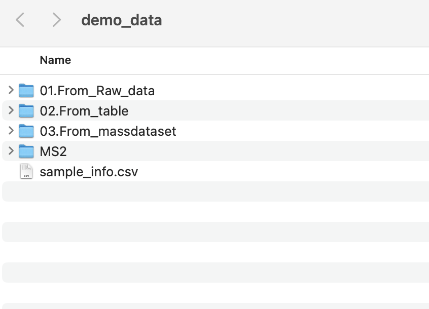
2.1 Data format converter
If your data is in raw format, you may first convert it to .mzML or .mzXML format using ProteoWizard. Please note that ProteoWizard only support Windows OS, you may consider massconverter if you don’t use Windows OS.
You can refer to the following parameter settings for ProteoWizard.
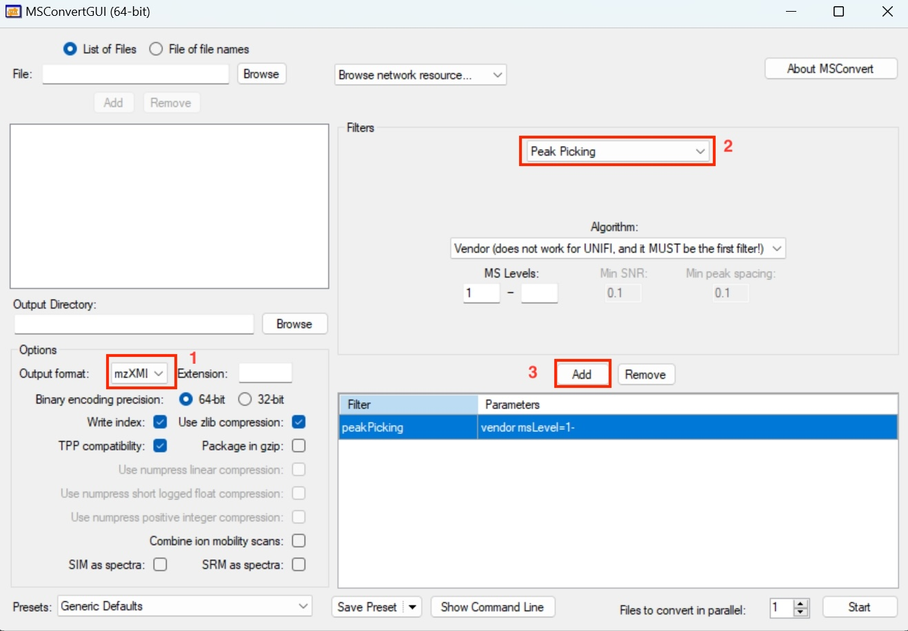
2.2 Methods to upload the files
To begin with, you need to set up the working directory and upload the required files. Here we have three options to upload the files.
Start with Ms file: If you have raw data in the format like .mzML or mzXML. You can click on ‘Start with Ms file’ to upload the file.
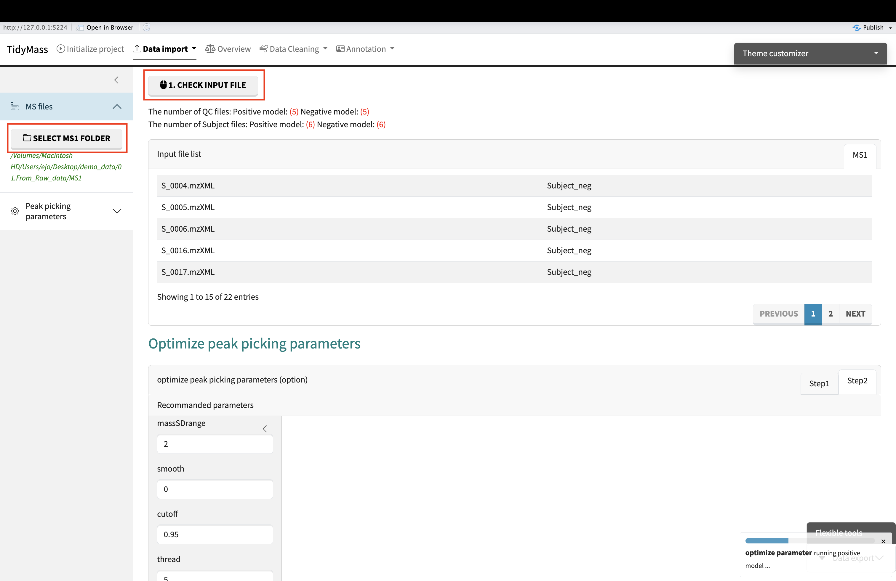 Start with table file: If your data is a post-peak metabolite expression matrix, you can click on the ‘Start with table file’ button to upload the data. The sample table is as follows, and the first four columns must exist, with column names not to be changed.
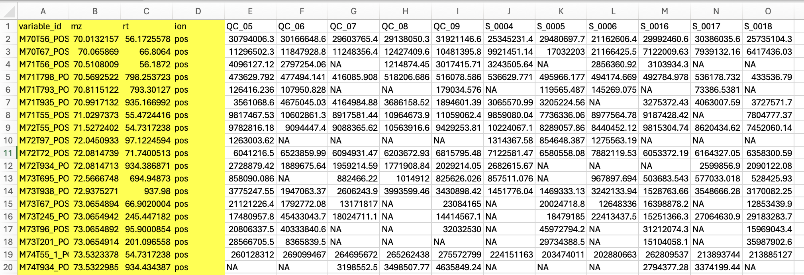
Start with massdataset object: If your data is generated by tidymass, you can choose the ‘Start with massdataset object’ button and directly upload them.
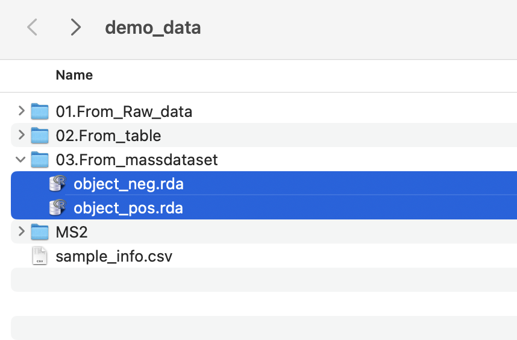
2.3 Project initiate
Here are the steps you need to follow to initiate the project:
- Set working directory
- Upload sample_info.csv file
- You may click the dropdown button and adjust the column names if there are any changes for them.
- Click “INITIALIZE PROJECT” button and check the sample information.
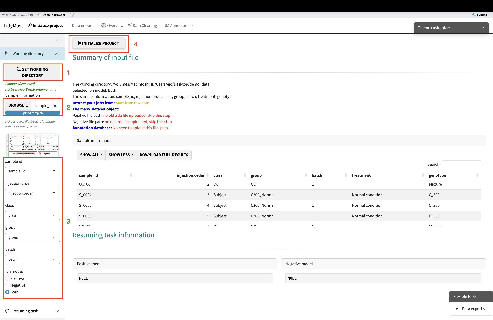
2.4 Data import
Upload Ms file
Before import the data, please ensure that the files are well anranged. Here is an example:
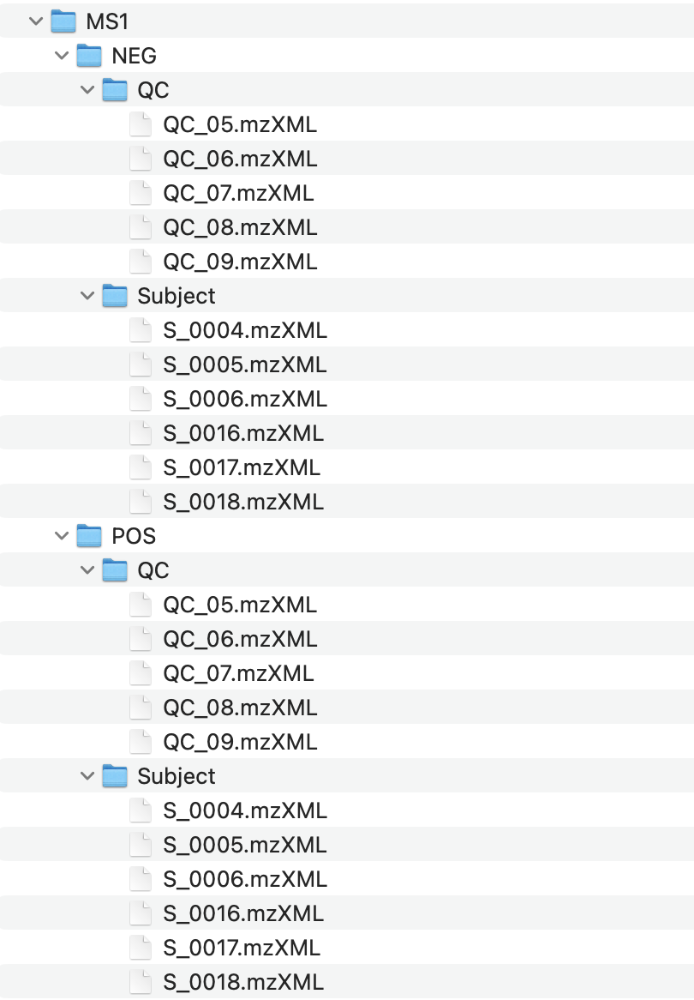
Click the dropdown button Data import and select Start with MS file.
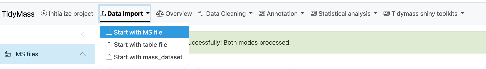
Then click SELECT MS1 FOLDER and choose the MS1 folder. Next, click CHECK INPUT FILE and you will see the number of files you have just uploaded.
If the files are ready for analysis, you can begin to optimize peak picking parameters. The first step is to choose the ppmCut.
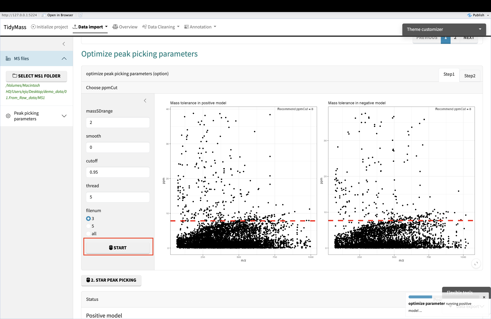
And the second step is to run with the ppmCut. (need to scroll down to find the button)
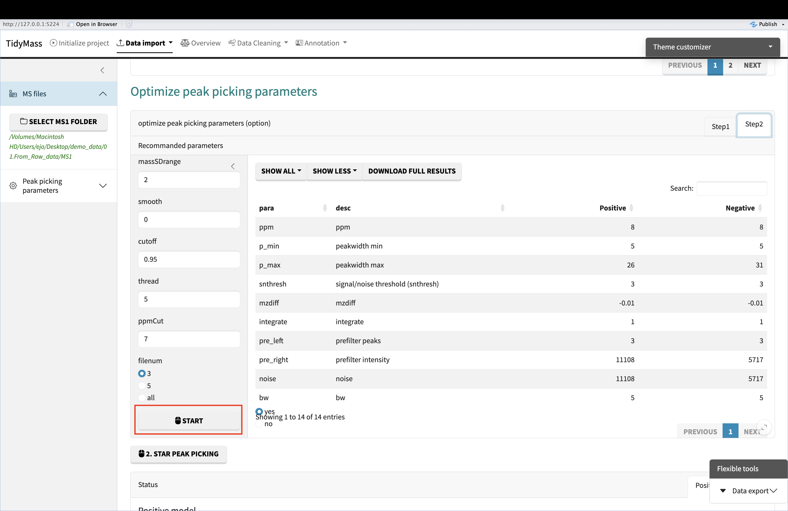
Finally, click START PEAK PICKING and get the results.
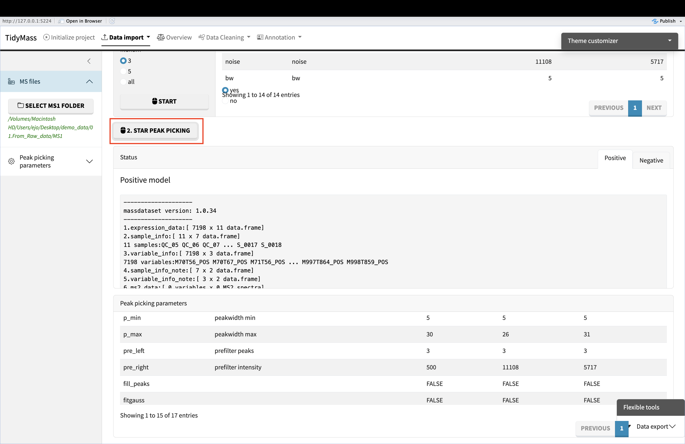
Upload table file
Click the dropdown button Data import and select Start with table file.
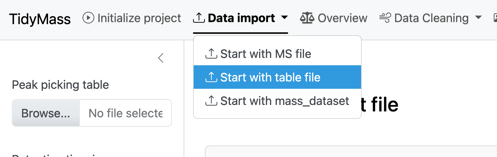
Then click BROWSE and select the csv table. Next, click INPUT FILE SUMMARY and you will see a summary of input file. If all the check have passed, then click GENERATE MASSDATASET OBJECT to obtain massdataset objects for both positive and negative modes.
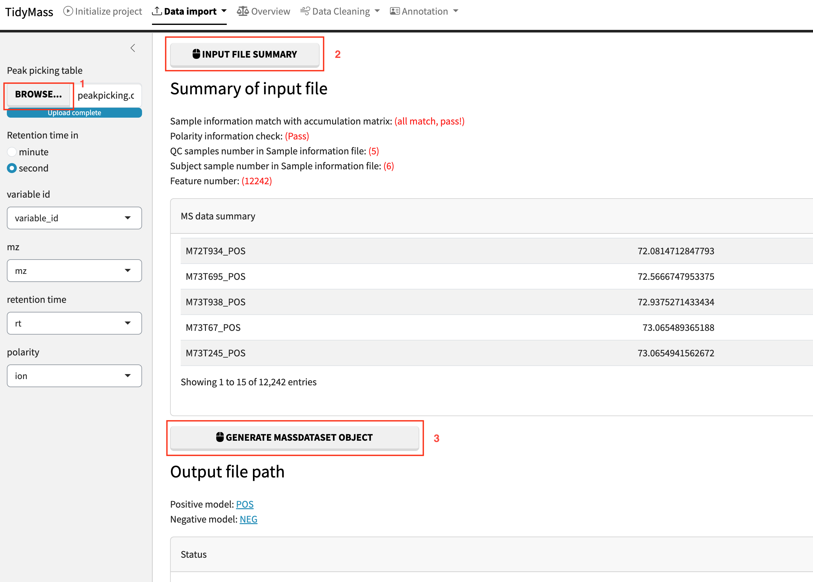
Upload table file
If you already have massdataset objects generated by tidymass, you can simply unpload them in this way. Seperately upload object for positive and negative mode and click CKECK INPUT
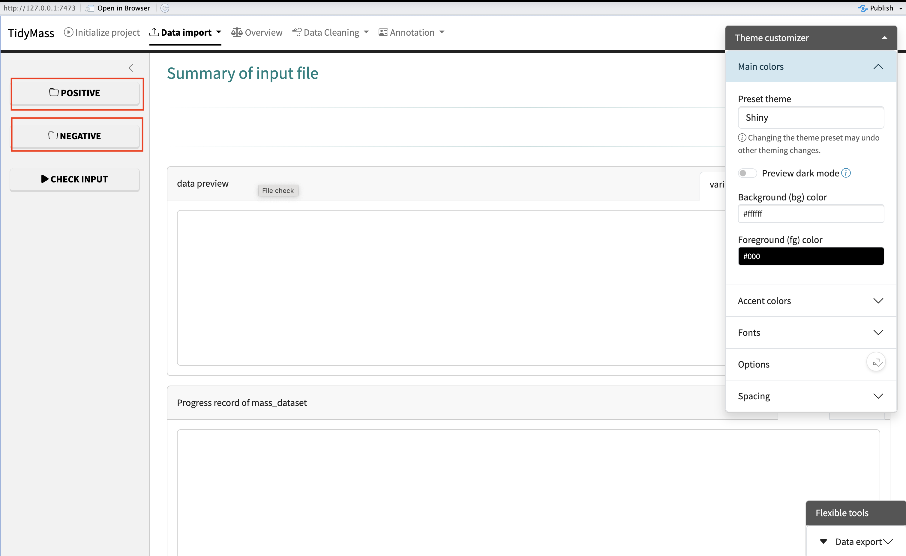